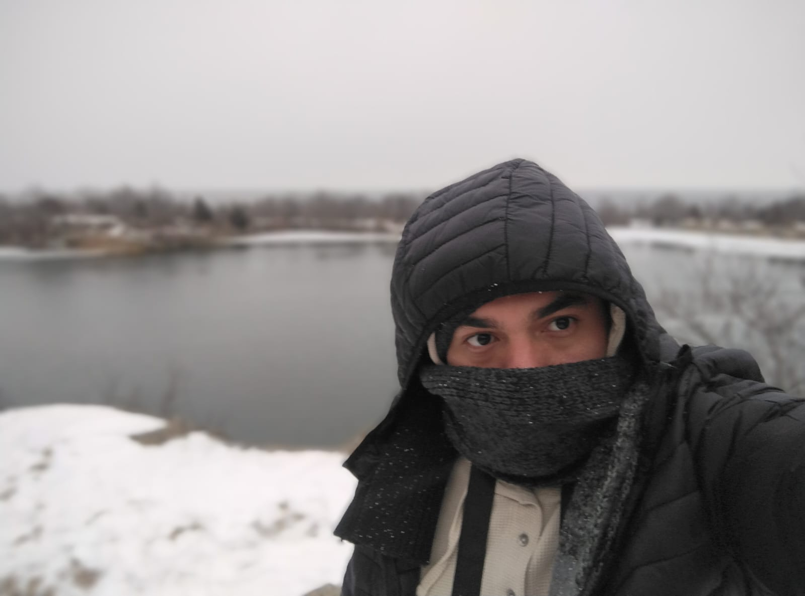

Acerca de Mí
Soy un diseñador interactivo y desarrollador creativo apasionado por la fusión entre el código y el arte. Mi enfoque se centra en crear experiencias digitales inmersivas que no solo sean funcionales, sino que también cuenten una historia y provoquen una emoción.
Con una base sólida en desarrollo web y un ojo para el diseño de vanguardia, exploro constantemente nuevas tecnologías para empujar los límites de la interacción digital.

HABILIDADES
- [ Programación Creativa ]
- [ Desarrollo Front-End ]
- [ Animación Web (GSAP) ]
- [ Gráficos 3D (Three.js) ]
- [ Diseño UI/UX ]
- [ Hardware Interactivo (ESP32) ]